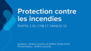

Galerie vidéo en ligne des séminaires de Codes Canada
| Titre | Description | Série | Aperçu |
|---|---|---|---|
| Matières et activités dangereuses (CNPI) | Présentation 1 Cette présentation apporte des éclaircissements sur le CNPI quant à la nouvelle catégorisation des matières dangereuses par type de risque. Cette modification importante facilite l'accès à l'information portant sur les dangers physiques, ce qui permet d'accroître la protection de la santé humaine, la protection de l'environnement et la sécurité incendie au cours de la manipulation, du transport et de l'utilisation de tels produits chimiques. Les participants seront également informés des modifications apportées au CNPI qui touchent les laboratoires, les travaux par points chauds et les réservoirs de stockage. |
2015 | |
| Code national de l'énergie pour les bâtiments (CNÉB 2015) | Présentation 2 Cette présentation expose les modifications visant la mise en application des exigences d'étanchéité à l'air du CNÉB. On y aborde aussi des sujets tels les ensembles de constructions opaques hors sol dans les bâtiments semi-chauffés, les valeurs de densité de la puissance d'éclairage intérieur, les commandes d'éclairage intérieur et la relation entre les exigences prescriptives et la réglementation en matière d'efficacité énergétique. |
2015 | |
| Accessibilité (partie 3 du CNB) | Présentation 3 Cette présentation aborde plusieurs mises à jour quant aux exigences de conception relatives à l'accessibilité de même que la réorganisation de la section 3.8. Les participants verront aussi les nouvelles exigences concernant les parcours accessibles et les changements apportés aux exigences de conception courantes, comme celles visant les commandes, les robinets, les barres d'appui, ainsi que l'équipement sanitaire accessible, comme les fontaines et les douches. |
2015 | |
| Moyens d'évacuation (partie 3 du CNB) | Présentation 4 Cette présentation couvre les changements apportés à la capacité d'évacuer un bâtiment lors d'une situation d'urgence. On y inclut la capacité d'évacuation des boîtes de nuit, la distance minimale entre les portes d'issue, les panneaux interdisant l'obstruction, les mécanismes de verrouillage électromagnétiques et la distance minimale des paliers tournants. |
2015 | |
| Escaliers, garde-corps et mains courantes (CNB) | Présentation 5 Cette présentation explique les changements apportés aux dispositions sur les escaliers, les rampes, les mains-courantes et les garde-corps des bâtiments visés par les parties 3 et 9 du CNB. Ces modifications incluent une augmentation des dimensions du giron dans les escaliers ne desservant qu'un seul logement, l'harmonisation de la hauteur des garde-corps dans une volée d'escalier de secours d'un bâtiment visé par les parties 3 et 9, et un assouplissement des paramètres de conception pour décourager l'escalade et permettre plus de choix de conception dans les bâtiments visés par les parties 3 et 9. |
2015 | |
| Calcul parasismique (partie 4 du CNB) | Présentation 6 Cette présentation décrit les récentes mises à jour des valeurs de risque sismique au Canada. Une méthode d'application simple a été élaborée pour les zones à faible risque sismique. D'autres sujets sont aussi traités, comme les ascenseurs, les systèmes d'entreposage par rayonnage, les vitrages, les dispositions relatives aux fondations et les bâtiments de 1 étage comportant des diaphragmes d'acier ou de bois. |
2015 | |
| Calcul des structures (partie 4 du CNB) | Présentation 7 Cette présentation porte sur les modifications apportées aux exigences relatives aux combinaisons de charges, aux charges appliquées aux garde-corps, aux charges dues à la neige et au vent, au verre à vitre et à la conception des garages de réparation. |
2015 |  |
| Résistance à l'arrachement sous l'action du vent et autres fenêtrages (partie 5 du CNB) | Présentation 8 Cette présentation décrit la nouvelle performance minimale exigée pour les murs-rideaux, les murs-fenêtres, les façades de magasin et les structures architecturales vitrées. On aborde aussi les exigences relatives aux essais portant sur la résistance à l'arrachement sous l'effet du vent des couvertures à membrane. |
2015 | |
| Systèmes d'isolation par l'extérieur avec enduit de finition (SIEEF), transmission des sons aériens entre les pièces, et couvertures (parties 5 et 9 du CNB) | Présentation 9 Cette présentation aborde un changement important apporté à la manière de mesurer la transmission du son. L'indice de transmission du son apparent (ITSA) a été introduit pour tenir compte de la transmission indirecte en plus de la transmission directe du son. Les participants apprendront aussi comment la conception et la construction des systèmes d'isolation par l'extérieur avec enduit de finition (SIEEF) sont maintenant exécutées. Les suppressions et remplacements des normes applicables aux couvertures, à la protection contre l'humidité et à l'imperméabilisation font aussi partie des sujets abordés. |
2015 | |
| Plomberie et installations de chauffage, ventilation et conditionnement d'air (partie 6 du CNB et du CNP) | Présentation 10 Cette présentation fournit de l'information portant sur les changements apportés à l'organisation de la partie 6 du CNB. Les participants en apprendront davantage sur les conditions climatiques dont il faut tenir compte dans la conception des installations et les nouvelles exigences relatives aux bacs d'égouttement pour les condensats, ainsi que sur les distances qui doivent séparer les ouvertures d'extraction d'air et les ouvertures extérieures d'introduction d'air. Les exigences obligatoires relatives à l'utilisation efficiente de l'eau et l'ajout de l'acier inoxydable comme matériau acceptable dans le CNP sont également abordés. |
2015 | |
| Enveloppe du bâtiment et structure (partie 9 du CNB) | Présentation 11 Cette présentation souligne les nouvelles exigences prescriptives plus rigoureuses relatives aux charges latérales, de même que les mises à jour visant les matériaux à faible perméance, les portes offrant une résistance limitée à l'infiltration d'eau (LW), les charges dues à la neige et la protection au-dessus des surfaces de cuisson. |
2015 | |
| Protection contre les incendies (partie 3 du CNB et annexe D) | Présentation 12 Cette présentation porte sur les mises à jour des exigences relatives à la protection des mousses plastiques, à l'étanchéité à la fumée, aux registres de contrôle de la fumée et sur les exigences récemment ajoutées relativement aux bâtiments de stockage libre-service. Les participants pourront aussi se familiariser avec la méthode fondée sur la somme des éléments contribuants qui sert à déterminer le degré de résistance au feu de combinaisons spécifiques de matériaux de construction. |
2015 |  |
| Construction combustible de moyenne hauteurs (CNB et CNPI) | Présentation 13 Cette présentation explique les nouvelles exigences et les risques associés à la construction de bâtiments résidentiels et d'établissements d'affaires de 6 étages au moyen de matériaux de construction combustible traditionnels. |
2015 |
- Date de modification :